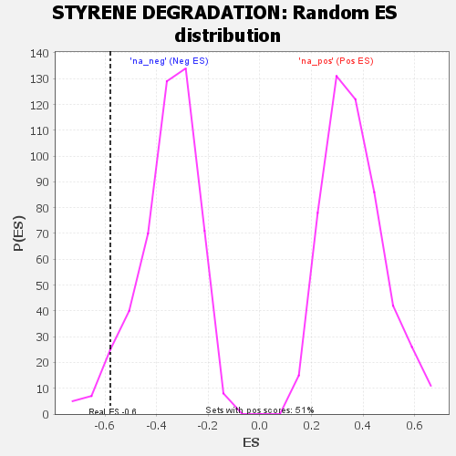

| | | Dataset | GSEA RNK clr Maaslin2 MucosalvsLuminal KO - DistalColon.rnk |
| Phenotype | NoPhenotypeAvailable |
| Upregulated in class | na_neg |
| GeneSet | STYRENE DEGRADATION |
| Enrichment Score (ES) | -0.5792994 |
| Normalized Enrichment Score (NES) | -1.6324052 |
| Nominal p-value | 0.049079753 |
| FDR q-value | 0.12738578 |
| FWER p-Value | 0.857 |
Table: GSEA Results Summary
 Fig 1: Enrichment plot: STYRENE DEGRADATION
Fig 1: Enrichment plot: STYRENE DEGRADATION
Profile of the Running ES Score & Positions of GeneSet Members on the Rank Ordered List

Fig 2: STYRENE DEGRADATION: Random ES distribution
Gene set null distribution of ES for STYRENE DEGRADATION